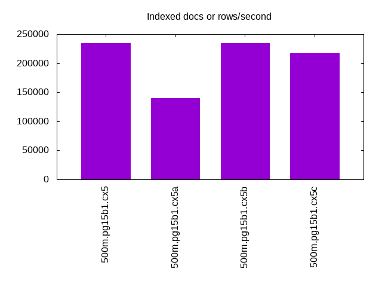

Introduction
This is a report for the insert benchmark with 500M docs and 1 client(s). It is generated by scripts (bash, awk, sed) and Tufte might not be impressed. An overview of the insert benchmark is here and a short update is here. Below, by DBMS, I mean DBMS+version.config. An example is my8020.c10b40 where my means MySQL, 8020 is version 8.0.20 and c10b40 is the name for the configuration file.
The test server is an Intel NUC with 4 cores, 16G RAM and a Samsung 970 EVO. More details are here. Clients and the DBMS share one server. The per-database configs are in the per-database subdirectories here.
The tested DBMS are:
- pg15b1.cx5 - Postgres 15beta1 and the cx5 config, wal_compression=off
- pg15b1.cx5a - Postgres 15beta1 and the cx5a config, wal_compression=pglz
- pg15b1.cx5b - Postgres 15beta1 and the cx5b config, wall_compression=lz4
- pg15b1.cx5c - Postgres 15beta1 and the cx5c config, wal_compression=zstd
Contents
- Summary
- l.i0: load without secondary indexes
- l.x: create secondary indexes
- l.i1: continue load after secondary indexes created
- q100.1: range queries with 100 insert/s per client
- q500.1: range queries with 500 insert/s per client
- q1000.1: range queries with 1000 insert/s per client
Summary
The numbers are inserts/s for l.i0 and l.i1, indexed docs (or rows) /s for l.x and queries/s for q*.2. The values are the average rate over the entire test for inserts (IPS) and queries (QPS). The range of values for IPS and QPS is split into 3 parts: bottom 25%, middle 50%, top 25%. Values in the bottom 25% have a red background, values in the top 25% have a green background and values in the middle have no color. A gray background is used for values that can be ignored because the DBMS did not sustain the target insert rate. Red backgrounds are not used when the minimum value is within 80% of the max value.
| dbms | l.i0 | l.x | l.i1 | q100.1 | q500.1 | q1000.1 |
|---|---|---|---|---|---|---|
| 500m.pg15b1.cx5 | 91929 | 234899 | 2344 | 7344 | 7289 | 7180 |
| 500m.pg15b1.cx5a | 92370 | 139459 | 1868 | 7316 | 7254 | 7135 |
| 500m.pg15b1.cx5b | 91861 | 234678 | 2609 | 7388 | 7303 | 7204 |
| 500m.pg15b1.cx5c | 92456 | 216681 | 2617 | 7356 | 7362 | 7243 |
This lists the average rate of inserts/s for the tests that do inserts concurrent with queries. For such tests the query rate is listed in the table above. The read+write tests are setup so that the insert rate should match the target rate every second. Cells that are not at least 95% of the target have a red background to indicate a failure to satisfy the target.
| dbms | q100.1 | q500.1 | q1000.1 |
|---|---|---|---|
| pg15b1.cx5 | 100 | 499 | 999 |
| pg15b1.cx5a | 100 | 499 | 999 |
| pg15b1.cx5b | 100 | 499 | 999 |
| pg15b1.cx5c | 100 | 500 | 999 |
| target | 100 | 500 | 1000 |
l.i0
l.i0: load without secondary indexes. Graphs for performance per 1-second interval are here.
Average throughput:

Insert response time histogram: each cell has the percentage of responses that take <= the time in the header and max is the max response time in seconds. For the max column values in the top 25% of the range have a red background and in the bottom 25% of the range have a green background. The red background is not used when the min value is within 80% of the max value.
| dbms | 256us | 1ms | 4ms | 16ms | 64ms | 256ms | 1s | 4s | 16s | gt | max |
|---|---|---|---|---|---|---|---|---|---|---|---|
| pg15b1.cx5 | 1.142 | 98.852 | 0.005 | 0.001 | nonzero | nonzero | 0.432 | ||||
| pg15b1.cx5a | 5.569 | 94.428 | 0.003 | 0.001 | 0.038 | ||||||
| pg15b1.cx5b | 1.024 | 98.973 | 0.002 | 0.001 | nonzero | 0.150 | |||||
| pg15b1.cx5c | 4.167 | 95.830 | 0.002 | 0.001 | nonzero | 0.106 |
Performance metrics for the DBMS listed above. Some are normalized by throughput, others are not. Legend for results is here.
ips qps rps rmbps wps wmbps rpq rkbpq wpi wkbpi csps cpups cspq cpupq dbgb1 dbgb2 rss maxop p50 p99 tag 91929 0 34 0.3 130.7 43.3 0.000 0.003 0.001 0.482 11057 42.5 0.120 18 47.8 63.4 0.0 0.432 92199 86408 500m.pg15b1.cx5 92370 0 32 0.3 132.3 40.7 0.000 0.004 0.001 0.451 11041 45.1 0.120 20 47.8 59.4 0.0 0.038 92697 88204 500m.pg15b1.cx5a 91861 0 34 0.3 123.7 40.8 0.000 0.003 0.001 0.454 11035 42.4 0.120 18 47.8 60.0 0.0 0.150 92130 85409 500m.pg15b1.cx5b 92456 0 35 0.3 121.0 40.1 0.000 0.003 0.001 0.444 11089 42.8 0.120 19 47.8 59.1 0.0 0.106 92698 87504 500m.pg15b1.cx5c
l.x
l.x: create secondary indexes.
Average throughput:
Performance metrics for the DBMS listed above. Some are normalized by throughput, others are not. Legend for results is here.
ips qps rps rmbps wps wmbps rpq rkbpq wpi wkbpi csps cpups cspq cpupq dbgb1 dbgb2 rss maxop p50 p99 tag 234899 0 648 80.4 214.0 83.6 0.003 0.351 0.001 0.365 572 22.8 0.002 4 91.9 107.5 0.0 0.003 NA NA 500m.pg15b1.cx5 139459 0 389 48.0 117.5 45.7 0.003 0.352 0.001 0.336 399 23.8 0.003 7 91.9 101.9 0.0 0.014 NA NA 500m.pg15b1.cx5a 234678 0 647 80.4 182.3 74.3 0.003 0.351 0.001 0.324 570 23.2 0.002 4 91.9 104.1 0.0 0.003 NA NA 500m.pg15b1.cx5b 216681 0 593 73.6 157.3 64.4 0.003 0.348 0.001 0.304 534 23.8 0.002 4 91.9 103.2 0.0 0.003 NA NA 500m.pg15b1.cx5c
l.i1
l.i1: continue load after secondary indexes created. Graphs for performance per 1-second interval are here.
Average throughput:
Insert response time histogram: each cell has the percentage of responses that take <= the time in the header and max is the max response time in seconds. For the max column values in the top 25% of the range have a red background and in the bottom 25% of the range have a green background. The red background is not used when the min value is within 80% of the max value.
| dbms | 256us | 1ms | 4ms | 16ms | 64ms | 256ms | 1s | 4s | 16s | gt | max |
|---|---|---|---|---|---|---|---|---|---|---|---|
| pg15b1.cx5 | 20.479 | 79.454 | 0.066 | 0.002 | 0.305 | ||||||
| pg15b1.cx5a | 4.697 | 94.802 | 0.500 | 0.174 | |||||||
| pg15b1.cx5b | 43.418 | 56.413 | 0.169 | 0.175 | |||||||
| pg15b1.cx5c | 46.608 | 53.245 | 0.147 | 0.221 |
Performance metrics for the DBMS listed above. Some are normalized by throughput, others are not. Legend for results is here.
ips qps rps rmbps wps wmbps rpq rkbpq wpi wkbpi csps cpups cspq cpupq dbgb1 dbgb2 rss maxop p50 p99 tag 2344 0 3168 25.4 4002.6 63.4 1.352 11.086 1.708 27.703 7234 20.3 3.087 346 93.6 112.4 0.0 0.305 2347 1298 500m.pg15b1.cx5 1868 0 2497 20.1 3169.4 46.7 1.337 10.996 1.697 25.597 5590 17.4 2.993 373 93.6 106.3 0.0 0.174 1898 1100 500m.pg15b1.cx5a 2609 0 3515 28.3 4404.7 58.4 1.347 11.115 1.688 22.928 7896 17.7 3.027 271 93.6 109.7 0.0 0.175 2648 1099 500m.pg15b1.cx5b 2617 0 3515 28.5 4351.9 49.0 1.343 11.144 1.663 19.176 7702 16.4 2.943 251 93.6 103.6 0.0 0.221 2697 1349 500m.pg15b1.cx5c
q100.1
q100.1: range queries with 100 insert/s per client. Graphs for performance per 1-second interval are here.
Average throughput:
Query response time histogram: each cell has the percentage of responses that take <= the time in the header and max is the max response time in seconds. For max values in the top 25% of the range have a red background and in the bottom 25% of the range have a green background. The red background is not used when the min value is within 80% of the max value.
| dbms | 256us | 1ms | 4ms | 16ms | 64ms | 256ms | 1s | 4s | 16s | gt | max |
|---|---|---|---|---|---|---|---|---|---|---|---|
| pg15b1.cx5 | 99.829 | 0.168 | 0.003 | nonzero | nonzero | 0.053 | |||||
| pg15b1.cx5a | 99.865 | 0.134 | 0.001 | nonzero | nonzero | nonzero | 0.078 | ||||
| pg15b1.cx5b | 99.850 | 0.145 | 0.004 | nonzero | nonzero | nonzero | 0.098 | ||||
| pg15b1.cx5c | 99.845 | 0.151 | 0.004 | nonzero | nonzero | nonzero | 0.093 |
Insert response time histogram: each cell has the percentage of responses that take <= the time in the header and max is the max response time in seconds. For max values in the top 25% of the range have a red background and in the bottom 25% of the range have a green background. The red background is not used when the min value is within 80% of the max value.
| dbms | 256us | 1ms | 4ms | 16ms | 64ms | 256ms | 1s | 4s | 16s | gt | max |
|---|---|---|---|---|---|---|---|---|---|---|---|
| pg15b1.cx5 | 96.507 | 3.486 | 0.007 | 0.230 | |||||||
| pg15b1.cx5a | 99.993 | 0.007 | 0.092 | ||||||||
| pg15b1.cx5b | 97.007 | 2.986 | 0.007 | 0.076 | |||||||
| pg15b1.cx5c | 6.965 | 93.021 | 0.007 | 0.007 | 0.518 |
Performance metrics for the DBMS listed above. Some are normalized by throughput, others are not. Legend for results is here.
ips qps rps rmbps wps wmbps rpq rkbpq wpi wkbpi csps cpups cspq cpupq dbgb1 dbgb2 rss maxop p50 p99 tag 100 7344 137 1.1 291.5 4.4 0.019 0.153 2.921 45.419 28491 26.2 3.879 143 93.7 99.3 0.0 0.053 7368 6473 500m.pg15b1.cx5 100 7316 136 1.1 261.2 3.5 0.019 0.153 2.617 35.947 28380 27.4 3.879 150 93.7 95.7 0.0 0.078 7336 6793 500m.pg15b1.cx5a 100 7388 136 1.1 309.3 3.9 0.018 0.153 3.099 39.624 28655 26.4 3.879 143 93.7 100.6 0.0 0.098 7402 6617 500m.pg15b1.cx5b 100 7356 137 1.1 325.1 3.5 0.019 0.155 3.257 36.092 28532 26.5 3.879 144 93.7 97.8 0.0 0.093 7384 6510 500m.pg15b1.cx5c
q500.1
q500.1: range queries with 500 insert/s per client. Graphs for performance per 1-second interval are here.
Average throughput:
Query response time histogram: each cell has the percentage of responses that take <= the time in the header and max is the max response time in seconds. For max values in the top 25% of the range have a red background and in the bottom 25% of the range have a green background. The red background is not used when the min value is within 80% of the max value.
| dbms | 256us | 1ms | 4ms | 16ms | 64ms | 256ms | 1s | 4s | 16s | gt | max |
|---|---|---|---|---|---|---|---|---|---|---|---|
| pg15b1.cx5 | 99.849 | 0.149 | 0.002 | nonzero | 0.005 | ||||||
| pg15b1.cx5a | 99.805 | 0.191 | 0.004 | nonzero | 0.007 | ||||||
| pg15b1.cx5b | 99.855 | 0.143 | 0.002 | nonzero | nonzero | 0.018 | |||||
| pg15b1.cx5c | 99.853 | 0.145 | 0.002 | nonzero | 0.006 |
Insert response time histogram: each cell has the percentage of responses that take <= the time in the header and max is the max response time in seconds. For max values in the top 25% of the range have a red background and in the bottom 25% of the range have a green background. The red background is not used when the min value is within 80% of the max value.
| dbms | 256us | 1ms | 4ms | 16ms | 64ms | 256ms | 1s | 4s | 16s | gt | max |
|---|---|---|---|---|---|---|---|---|---|---|---|
| pg15b1.cx5 | 92.101 | 7.893 | 0.006 | 0.076 | |||||||
| pg15b1.cx5a | 99.900 | 0.100 | 0.120 | ||||||||
| pg15b1.cx5b | 96.237 | 3.760 | 0.003 | 0.070 | |||||||
| pg15b1.cx5c | 45.793 | 54.200 | 0.007 | 0.104 |
Performance metrics for the DBMS listed above. Some are normalized by throughput, others are not. Legend for results is here.
ips qps rps rmbps wps wmbps rpq rkbpq wpi wkbpi csps cpups cspq cpupq dbgb1 dbgb2 rss maxop p50 p99 tag 499 7289 658 5.2 1018.5 17.8 0.090 0.734 2.039 36.494 29431 27.3 4.038 150 94.6 99.7 0.0 0.005 7288 7176 500m.pg15b1.cx5 499 7254 658 5.2 1013.6 15.0 0.091 0.741 2.030 30.823 29315 33.1 4.041 183 94.6 98.0 0.0 0.007 7256 7144 500m.pg15b1.cx5a 499 7303 658 5.2 1009.1 14.5 0.090 0.736 2.021 29.671 29458 27.7 4.034 152 94.6 98.2 0.0 0.018 7304 7192 500m.pg15b1.cx5b 500 7362 658 5.3 999.8 12.3 0.089 0.733 2.002 25.222 29676 29.1 4.031 158 94.6 96.9 0.0 0.006 7358 7224 500m.pg15b1.cx5c
q1000.1
q1000.1: range queries with 1000 insert/s per client. Graphs for performance per 1-second interval are here.
Average throughput:
Query response time histogram: each cell has the percentage of responses that take <= the time in the header and max is the max response time in seconds. For max values in the top 25% of the range have a red background and in the bottom 25% of the range have a green background. The red background is not used when the min value is within 80% of the max value.
| dbms | 256us | 1ms | 4ms | 16ms | 64ms | 256ms | 1s | 4s | 16s | gt | max |
|---|---|---|---|---|---|---|---|---|---|---|---|
| pg15b1.cx5 | 99.674 | 0.323 | 0.003 | nonzero | 0.006 | ||||||
| pg15b1.cx5a | 99.605 | 0.386 | 0.008 | nonzero | 0.008 | ||||||
| pg15b1.cx5b | 99.701 | 0.296 | 0.003 | nonzero | nonzero | 0.018 | |||||
| pg15b1.cx5c | 99.696 | 0.300 | 0.004 | nonzero | 0.007 |
Insert response time histogram: each cell has the percentage of responses that take <= the time in the header and max is the max response time in seconds. For max values in the top 25% of the range have a red background and in the bottom 25% of the range have a green background. The red background is not used when the min value is within 80% of the max value.
| dbms | 256us | 1ms | 4ms | 16ms | 64ms | 256ms | 1s | 4s | 16s | gt | max |
|---|---|---|---|---|---|---|---|---|---|---|---|
| pg15b1.cx5 | 84.762 | 15.217 | 0.021 | 0.001 | 0.293 | ||||||
| pg15b1.cx5a | 99.876 | 0.124 | 0.001 | 0.259 | |||||||
| pg15b1.cx5b | 83.189 | 16.799 | 0.012 | 0.100 | |||||||
| pg15b1.cx5c | 53.013 | 46.967 | 0.019 | 0.102 |
Performance metrics for the DBMS listed above. Some are normalized by throughput, others are not. Legend for results is here.
ips qps rps rmbps wps wmbps rpq rkbpq wpi wkbpi csps cpups cspq cpupq dbgb1 dbgb2 rss maxop p50 p99 tag 999 7180 1294 10.3 1727.9 31.5 0.180 1.475 1.729 32.332 30411 28.3 4.236 158 95.5 104.5 0.0 0.006 7179 7048 500m.pg15b1.cx5 999 7135 1299 10.4 1713.7 26.0 0.182 1.499 1.715 26.640 30195 38.9 4.232 218 95.5 101.4 0.0 0.008 7144 6987 500m.pg15b1.cx5a 999 7204 1299 10.4 1711.9 25.9 0.180 1.485 1.714 26.566 30459 28.9 4.228 160 95.5 101.4 0.0 0.018 7208 7080 500m.pg15b1.cx5b 999 7243 1295 10.5 1702.3 22.0 0.179 1.480 1.704 22.501 30563 31.5 4.220 174 95.5 99.2 0.0 0.007 7240 7112 500m.pg15b1.cx5c
l.i0
l.i0: load without secondary indexes
Performance metrics for all DBMS, not just the ones listed above. Some are normalized by throughput, others are not. Legend for results is here.
ips qps rps rmbps wps wmbps rpq rkbpq wpi wkbpi csps cpups cspq cpupq dbgb1 dbgb2 rss maxop p50 p99 tag 91929 0 34 0.3 130.7 43.3 0.000 0.003 0.001 0.482 11057 42.5 0.120 18 47.8 63.4 0.0 0.432 92199 86408 500m.pg15b1.cx5 92370 0 32 0.3 132.3 40.7 0.000 0.004 0.001 0.451 11041 45.1 0.120 20 47.8 59.4 0.0 0.038 92697 88204 500m.pg15b1.cx5a 91861 0 34 0.3 123.7 40.8 0.000 0.003 0.001 0.454 11035 42.4 0.120 18 47.8 60.0 0.0 0.150 92130 85409 500m.pg15b1.cx5b 92456 0 35 0.3 121.0 40.1 0.000 0.003 0.001 0.444 11089 42.8 0.120 19 47.8 59.1 0.0 0.106 92698 87504 500m.pg15b1.cx5c
l.x
l.x: create secondary indexes
Performance metrics for all DBMS, not just the ones listed above. Some are normalized by throughput, others are not. Legend for results is here.
ips qps rps rmbps wps wmbps rpq rkbpq wpi wkbpi csps cpups cspq cpupq dbgb1 dbgb2 rss maxop p50 p99 tag 234899 0 648 80.4 214.0 83.6 0.003 0.351 0.001 0.365 572 22.8 0.002 4 91.9 107.5 0.0 0.003 NA NA 500m.pg15b1.cx5 139459 0 389 48.0 117.5 45.7 0.003 0.352 0.001 0.336 399 23.8 0.003 7 91.9 101.9 0.0 0.014 NA NA 500m.pg15b1.cx5a 234678 0 647 80.4 182.3 74.3 0.003 0.351 0.001 0.324 570 23.2 0.002 4 91.9 104.1 0.0 0.003 NA NA 500m.pg15b1.cx5b 216681 0 593 73.6 157.3 64.4 0.003 0.348 0.001 0.304 534 23.8 0.002 4 91.9 103.2 0.0 0.003 NA NA 500m.pg15b1.cx5c
l.i1
l.i1: continue load after secondary indexes created
Performance metrics for all DBMS, not just the ones listed above. Some are normalized by throughput, others are not. Legend for results is here.
ips qps rps rmbps wps wmbps rpq rkbpq wpi wkbpi csps cpups cspq cpupq dbgb1 dbgb2 rss maxop p50 p99 tag 2344 0 3168 25.4 4002.6 63.4 1.352 11.086 1.708 27.703 7234 20.3 3.087 346 93.6 112.4 0.0 0.305 2347 1298 500m.pg15b1.cx5 1868 0 2497 20.1 3169.4 46.7 1.337 10.996 1.697 25.597 5590 17.4 2.993 373 93.6 106.3 0.0 0.174 1898 1100 500m.pg15b1.cx5a 2609 0 3515 28.3 4404.7 58.4 1.347 11.115 1.688 22.928 7896 17.7 3.027 271 93.6 109.7 0.0 0.175 2648 1099 500m.pg15b1.cx5b 2617 0 3515 28.5 4351.9 49.0 1.343 11.144 1.663 19.176 7702 16.4 2.943 251 93.6 103.6 0.0 0.221 2697 1349 500m.pg15b1.cx5c
q100.1
q100.1: range queries with 100 insert/s per client
Performance metrics for all DBMS, not just the ones listed above. Some are normalized by throughput, others are not. Legend for results is here.
ips qps rps rmbps wps wmbps rpq rkbpq wpi wkbpi csps cpups cspq cpupq dbgb1 dbgb2 rss maxop p50 p99 tag 100 7344 137 1.1 291.5 4.4 0.019 0.153 2.921 45.419 28491 26.2 3.879 143 93.7 99.3 0.0 0.053 7368 6473 500m.pg15b1.cx5 100 7316 136 1.1 261.2 3.5 0.019 0.153 2.617 35.947 28380 27.4 3.879 150 93.7 95.7 0.0 0.078 7336 6793 500m.pg15b1.cx5a 100 7388 136 1.1 309.3 3.9 0.018 0.153 3.099 39.624 28655 26.4 3.879 143 93.7 100.6 0.0 0.098 7402 6617 500m.pg15b1.cx5b 100 7356 137 1.1 325.1 3.5 0.019 0.155 3.257 36.092 28532 26.5 3.879 144 93.7 97.8 0.0 0.093 7384 6510 500m.pg15b1.cx5c
q500.1
q500.1: range queries with 500 insert/s per client
Performance metrics for all DBMS, not just the ones listed above. Some are normalized by throughput, others are not. Legend for results is here.
ips qps rps rmbps wps wmbps rpq rkbpq wpi wkbpi csps cpups cspq cpupq dbgb1 dbgb2 rss maxop p50 p99 tag 499 7289 658 5.2 1018.5 17.8 0.090 0.734 2.039 36.494 29431 27.3 4.038 150 94.6 99.7 0.0 0.005 7288 7176 500m.pg15b1.cx5 499 7254 658 5.2 1013.6 15.0 0.091 0.741 2.030 30.823 29315 33.1 4.041 183 94.6 98.0 0.0 0.007 7256 7144 500m.pg15b1.cx5a 499 7303 658 5.2 1009.1 14.5 0.090 0.736 2.021 29.671 29458 27.7 4.034 152 94.6 98.2 0.0 0.018 7304 7192 500m.pg15b1.cx5b 500 7362 658 5.3 999.8 12.3 0.089 0.733 2.002 25.222 29676 29.1 4.031 158 94.6 96.9 0.0 0.006 7358 7224 500m.pg15b1.cx5c
q1000.1
q1000.1: range queries with 1000 insert/s per client
Performance metrics for all DBMS, not just the ones listed above. Some are normalized by throughput, others are not. Legend for results is here.
ips qps rps rmbps wps wmbps rpq rkbpq wpi wkbpi csps cpups cspq cpupq dbgb1 dbgb2 rss maxop p50 p99 tag 999 7180 1294 10.3 1727.9 31.5 0.180 1.475 1.729 32.332 30411 28.3 4.236 158 95.5 104.5 0.0 0.006 7179 7048 500m.pg15b1.cx5 999 7135 1299 10.4 1713.7 26.0 0.182 1.499 1.715 26.640 30195 38.9 4.232 218 95.5 101.4 0.0 0.008 7144 6987 500m.pg15b1.cx5a 999 7204 1299 10.4 1711.9 25.9 0.180 1.485 1.714 26.566 30459 28.9 4.228 160 95.5 101.4 0.0 0.018 7208 7080 500m.pg15b1.cx5b 999 7243 1295 10.5 1702.3 22.0 0.179 1.480 1.704 22.501 30563 31.5 4.220 174 95.5 99.2 0.0 0.007 7240 7112 500m.pg15b1.cx5c
l.i0
- l.i0: load without secondary indexes
- Legend for results is here.
- Each entry lists the percentage of responses that fit in that bucket (slower than max time for previous bucket, faster than min time for next bucket).
Insert response time histogram
256us 1ms 4ms 16ms 64ms 256ms 1s 4s 16s gt max tag 0.000 1.142 98.852 0.005 0.001 nonzero nonzero 0.000 0.000 0.000 0.432 pg15b1.cx5 0.000 5.569 94.428 0.003 0.001 0.000 0.000 0.000 0.000 0.000 0.038 pg15b1.cx5a 0.000 1.024 98.973 0.002 0.001 nonzero 0.000 0.000 0.000 0.000 0.150 pg15b1.cx5b 0.000 4.167 95.830 0.002 0.001 nonzero 0.000 0.000 0.000 0.000 0.106 pg15b1.cx5c
l.x
- l.x: create secondary indexes
- Legend for results is here.
- Each entry lists the percentage of responses that fit in that bucket (slower than max time for previous bucket, faster than min time for next bucket).
TODO - determine whether there is data for create index response time
l.i1
- l.i1: continue load after secondary indexes created
- Legend for results is here.
- Each entry lists the percentage of responses that fit in that bucket (slower than max time for previous bucket, faster than min time for next bucket).
Insert response time histogram
256us 1ms 4ms 16ms 64ms 256ms 1s 4s 16s gt max tag 0.000 0.000 0.000 20.479 79.454 0.066 0.002 0.000 0.000 0.000 0.305 pg15b1.cx5 0.000 0.000 0.000 4.697 94.802 0.500 0.000 0.000 0.000 0.000 0.174 pg15b1.cx5a 0.000 0.000 0.000 43.418 56.413 0.169 0.000 0.000 0.000 0.000 0.175 pg15b1.cx5b 0.000 0.000 0.000 46.608 53.245 0.147 0.000 0.000 0.000 0.000 0.221 pg15b1.cx5c
q100.1
- q100.1: range queries with 100 insert/s per client
- Legend for results is here.
- Each entry lists the percentage of responses that fit in that bucket (slower than max time for previous bucket, faster than min time for next bucket).
Query response time histogram
256us 1ms 4ms 16ms 64ms 256ms 1s 4s 16s gt max tag 99.829 0.168 0.003 nonzero nonzero 0.000 0.000 0.000 0.000 0.000 0.053 pg15b1.cx5 99.865 0.134 0.001 nonzero nonzero nonzero 0.000 0.000 0.000 0.000 0.078 pg15b1.cx5a 99.850 0.145 0.004 nonzero nonzero nonzero 0.000 0.000 0.000 0.000 0.098 pg15b1.cx5b 99.845 0.151 0.004 nonzero nonzero nonzero 0.000 0.000 0.000 0.000 0.093 pg15b1.cx5c
Insert response time histogram
256us 1ms 4ms 16ms 64ms 256ms 1s 4s 16s gt max tag 0.000 0.000 0.000 96.507 3.486 0.007 0.000 0.000 0.000 0.000 0.230 pg15b1.cx5 0.000 0.000 0.000 0.000 99.993 0.007 0.000 0.000 0.000 0.000 0.092 pg15b1.cx5a 0.000 0.000 0.000 97.007 2.986 0.007 0.000 0.000 0.000 0.000 0.076 pg15b1.cx5b 0.000 0.000 0.000 6.965 93.021 0.007 0.007 0.000 0.000 0.000 0.518 pg15b1.cx5c
q500.1
- q500.1: range queries with 500 insert/s per client
- Legend for results is here.
- Each entry lists the percentage of responses that fit in that bucket (slower than max time for previous bucket, faster than min time for next bucket).
Query response time histogram
256us 1ms 4ms 16ms 64ms 256ms 1s 4s 16s gt max tag 99.849 0.149 0.002 nonzero 0.000 0.000 0.000 0.000 0.000 0.000 0.005 pg15b1.cx5 99.805 0.191 0.004 nonzero 0.000 0.000 0.000 0.000 0.000 0.000 0.007 pg15b1.cx5a 99.855 0.143 0.002 nonzero nonzero 0.000 0.000 0.000 0.000 0.000 0.018 pg15b1.cx5b 99.853 0.145 0.002 nonzero 0.000 0.000 0.000 0.000 0.000 0.000 0.006 pg15b1.cx5c
Insert response time histogram
256us 1ms 4ms 16ms 64ms 256ms 1s 4s 16s gt max tag 0.000 0.000 0.000 92.101 7.893 0.006 0.000 0.000 0.000 0.000 0.076 pg15b1.cx5 0.000 0.000 0.000 0.000 99.900 0.100 0.000 0.000 0.000 0.000 0.120 pg15b1.cx5a 0.000 0.000 0.000 96.237 3.760 0.003 0.000 0.000 0.000 0.000 0.070 pg15b1.cx5b 0.000 0.000 0.000 45.793 54.200 0.007 0.000 0.000 0.000 0.000 0.104 pg15b1.cx5c
q1000.1
- q1000.1: range queries with 1000 insert/s per client
- Legend for results is here.
- Each entry lists the percentage of responses that fit in that bucket (slower than max time for previous bucket, faster than min time for next bucket).
Query response time histogram
256us 1ms 4ms 16ms 64ms 256ms 1s 4s 16s gt max tag 99.674 0.323 0.003 nonzero 0.000 0.000 0.000 0.000 0.000 0.000 0.006 pg15b1.cx5 99.605 0.386 0.008 nonzero 0.000 0.000 0.000 0.000 0.000 0.000 0.008 pg15b1.cx5a 99.701 0.296 0.003 nonzero nonzero 0.000 0.000 0.000 0.000 0.000 0.018 pg15b1.cx5b 99.696 0.300 0.004 nonzero 0.000 0.000 0.000 0.000 0.000 0.000 0.007 pg15b1.cx5c
Insert response time histogram
256us 1ms 4ms 16ms 64ms 256ms 1s 4s 16s gt max tag 0.000 0.000 0.000 84.762 15.217 0.021 0.001 0.000 0.000 0.000 0.293 pg15b1.cx5 0.000 0.000 0.000 0.000 99.876 0.124 0.001 0.000 0.000 0.000 0.259 pg15b1.cx5a 0.000 0.000 0.000 83.189 16.799 0.012 0.000 0.000 0.000 0.000 0.100 pg15b1.cx5b 0.000 0.000 0.000 53.013 46.967 0.019 0.000 0.000 0.000 0.000 0.102 pg15b1.cx5c